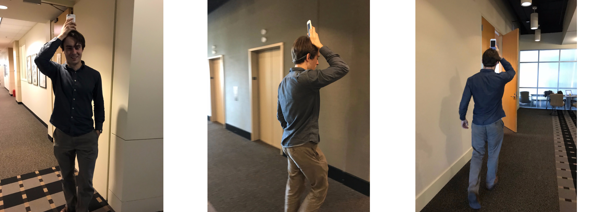
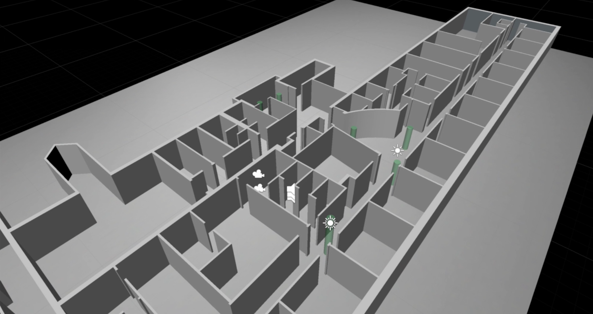

There is a continuing need for a portable, practical, and highly functional navigation aid for people with vision loss. This includes temporary loss, such as firefighters in a smoke-filled building, and long term or permanent blindness. In either case, the user needs to move from place to place, avoid obstacles, and learn the details of the environment. An audio-only interface can be very helpful to guide the listener along a path, while at the same time indicating the location or other important features in the environments.
The objective of this project is to build a navigation system that combines indoor navigation technology and audition. Indoor navigation technology can locate people and assets using augmented reality kit, Bluetooth beacons, etc. Audition can provide direction for navigation and produce the most precise localization besides vision.
The total control of the environment dramatically reduces safety concerns that are paramount in real-life navigation without vision. The system will help visually impaired individuals navigate themselves in real-world indoor environments. It may also help first responders (like fire-fighters) navigate without vision in critical situations. Besides, it is assistive not only for low vision, but also increase indoor navigating efficacy and efficiency for normal vision circumstances. Without relying on vision while navigating, the users will have better autonomy in multitasking scenarios.
PROJECT BRIEF
Introduction to SWAN Interior
SYSTEM DESIGN
Features & Technology Feasibility
- What sound tempo would be most natural and easy for users to perceive?
- How would the two variables:
(a) the number of waypoints and
(b) density of environment sounds influence people’s perceptions of the audio cues.
-
The system we built is a wearable auditory interior navigation system. It has an AR mobile application, and a bluetooth bone conduction headphone. When users open the application, they are able to see the 3D map of the building they are currently in. There are semi-transparent green cylinders, which stands for the waypoints that map out the route to help with the navigation. They would hear a spatialized sound from the bone conduction headphone that directs them to the waypoint. As they are approaching the waypoint, the tempo of the sound would become faster and faster. When they reach the waypoint, they would hear a check sound as a confirmation. In this way, they are able to locate and find the waypoints without visual aid. The system includes the following features: front-to-back disambiguation, waypoint navigation via proximity-based tempo mapping of audio cues, real-world indoor navigation.
-
It mainly utilizes the technology of Unity ARKit and indoor 3D modeling. We used Sketchup to build 3D model of the building that we want to conduct tests in. Then we imported the model into Unity, then added waypoints and audio cues to different locations of the building. Finally we built the application on IOS smartphone.
Research questions we explored in this project are:
PILOT TESTING
GVU Demo Day & Hallway Testing
GVU Demo Day
-

- We have developed a low-fidelity version of the SWAN Audio-based AR mobile application for GVU Demo Day and conducted more than 10 causal testings during the demo session. This version includes a simplified hallway interior with 6 checkpoints along the hallway as well as an audio environment sound for a door on the designed navigating path. The geometry of the 3D modeling is rather simple, which only contains a rectangular-shaped hallway and a room at one side.
Test Process
The participants were asked to stand at a designed starting point, and launch the mobile application. Due to the limitation of the Unity ARKit, the users needed to hold the mobile phone straight for a few second to allow the application to detect the floor as reference plane and then plot the AR geometry accordingly. The participants needed to orient themselves according to the audio cues, and the mobile phone’s camera was required to face the same direction of their head as mobile application was using the camera to detect the location.
The participants then passed 3 checkpoints walking away from the starting point to the other end of the hallway, and headed back for checkpoint 4. The audio cue then directed the participants to checkpoint 5 which was located in the room we designed. And the journey ended at the last checkpoint which led the participants back to the starting area.
Findings
The main findings include two aspects, including audio cue perception and cognition, and body motion and mounting methods. There are 3 types of audio cue in the system now - continuous audio beacon, checkpoint confirmation, obstacle/barrier/physical environment alert. All participants demonstrated no confusion about the audio confirmation, but the other two caused misinterpretation to some extent. Also, a number of participants found difficult to recognize the audio source’s direction. And there is no audio cue for user to determine whether they are pointing at the right direction.
Besides, people’s interpretations to the audio cues vary enormously. Even the participants have been instructed to ‘go to checkpoint at where the audio source is located’, some of them still felt confused when they were trying to find their way following the sound cue. Some people indicated that it is hard to distinguish the frequency increase/decrease with a relatively small displacement. One stated that he need to stride back and forth to find out whether he is heading towards the checkpoint.
As per body motion issue, most of participants did not indicate that they felt inconvenience when they are told to rotate their body with the camera during the test runs, probably they had more patience for demos as compared to actual products. Less than half of participants forgot to rotate their body when they were trying to make to the checkpoint and they rotated their heads instead as a more natural reaction.
Potential research questions
- Experiment whether adding confirmation sound for direction will improve clarity for the wayfinding process (Test with/without the direction confirmation audio cue with other variables controlled).
- Define a proper curve to map the frequency of audio beacon to the actual distance between the user and the checkpoint.
- Number of checkpoints between starting point and destination.
- Examine the usability of head-mount and chest-mount.
- Conduct experiments for both with vision and blindfolded and see whether there is correlation with vision and audio-based wayfinding.
Pilot Hallway Testing
-

- We conducted a pilot hallway testing on the medium fidelity prototype of SWAN. For this version, we built the 3D model of the second floor of JS Coon building using Sketchup, then imported the model into Unity. The 3D model included all constructional features of the interior, such as pillars, doorways, and rooms. It did not contain furnitures and other items installed after construction.
Test Process
This pilot run was conducted with our team member. There starting point was located inside Sonification Lab and the user need to meet the first checkpoint in front of the lab’s door, make a left turn walking to the common area to find the checkpoints 2 to 4, and the audio cues led the user to find the last two checkpoints located near the lift at the corner.
Findings
Since it was an internal testing conducted by a project team member, we considered the participant familiar enough with the system. She was able to perceive, recognize and interpret the audio cue clearly and easily. The pilot test revealed problems which were more on the technical side rather than the user experience side.
The most crucial issue was that the indoor location the system obtained via mobile phone’s camera drifted severely as the increase of indoor geometry complexity. When the user passed through a door or walked from a narrow corridor into the open common area, the system often lost context and was not able to pinpoint the accurate location. Without a stable and accurate location data, the system was not be able to perform following navigating tasks as designed. We also noted that keeping the camera straight, walking and turning slower could reduce the frequency of drifting to some extent.
As navigating while walking is the main use scenario of this system, the pace of walking and speed of turning are considered very important to the entire experience. Ideally, we do not want the participants to walk at an abnormally slow speed. In this case, we decided to explore other indoor location technologies, for instance, Indoor Atlas, and integrate them into the system to reduce drifting and increase location accuracy.
Future Research Plan
Measures, Metrics & Further Testing
-
In future, we plan to build different versions of the prototype and recruit more participants to do the tests. We want to build the versions based on two manipulations: “environment complexity”, which includes both falloff and how many non-waypoint sounds are enabled; and “waypoint density”, which is whether waypoints are far apart, or close together. We want to include these two variables because we are interested in the different performance trade offs present. If we include few waypoints in the model, we rely on the environment sounds to help with obstacle avoidance; or we can also include many waypoints to guarantee users can take an optimal path, but the sounds might be annoying. So the matrix of the testing variables would be like:
| Many waypoints | Few waypoints | |
|---|---|---|
| High density of environment sounds | ||
| Low density of environment sounds |
In addition to these two variables, we also need to have four different courses in different parts of the building with roughly the same number of objects and waypoints in order to get more unbiased results. In total we will have 16 versions of the prototype because we will have four courses for each of the combinations shown in the above matrix. Participants can start in slightly different parts of the building, but each should generally cover the same sorts of areas, and should have (a) the same number of waypoints and (b) approximately the same distance traveled. We plan to recruit 20 participants for initial testings, then recruit more participants if the initial testings show promising results.
Besides conducting more tests on different versions of current prototype, the study can be brought further by developing and integrating more accurate indoor location technology. The current prototype sometimes has drifts when user walks. The performance would be greatly improved if the location of the user can be more precisely tracked.
Video
Introduction to the Project & Demo